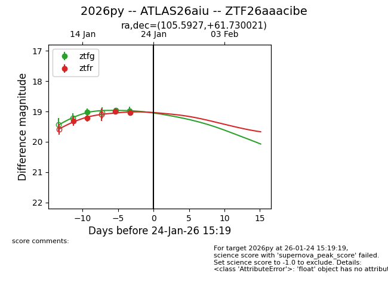
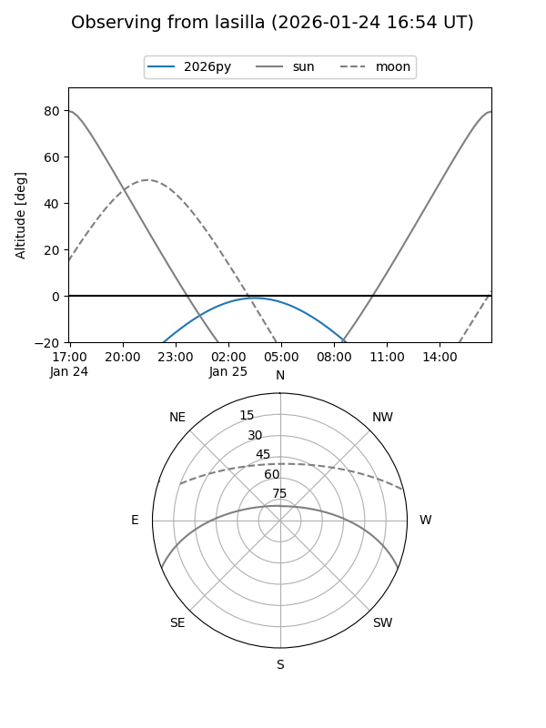
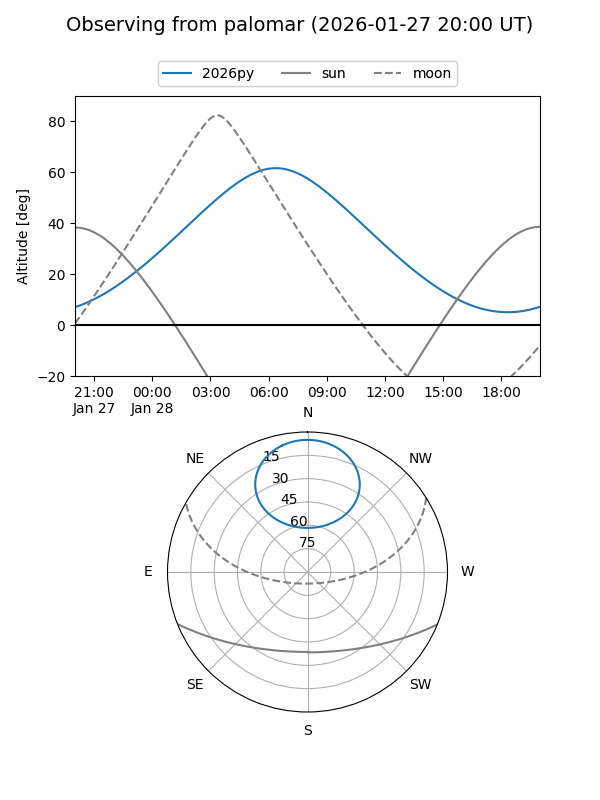
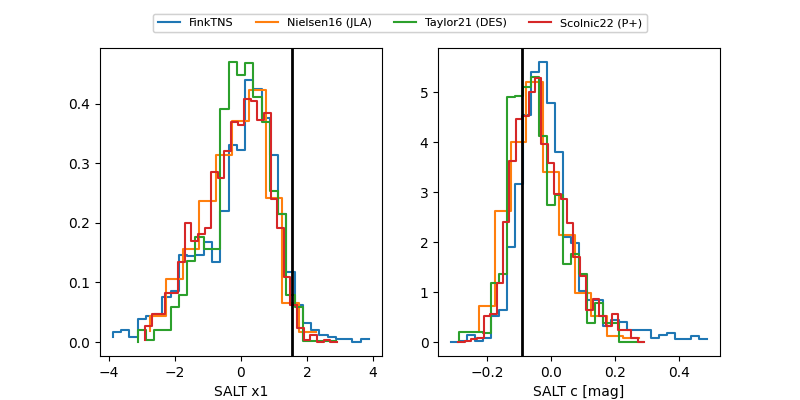

2026py
Target 2026py at 2026-01-26 03:36
Aliases and brokers:
FINK: link
Lasair: link
ALeRCE: link
TNS: link
YSE: link
alt names
ZTF26aaacibe (ztf,fink_ztf)
2026py (tns,yse)
ATLAS26aiu (atlas)
Coordinates:
equatorial (ra, dec) = 105.5927,+61.73002
equatorial (HMS+DMS) = 07:02:22.24,+61:43:48.08
galactic (l, b) = (154.3815,+24.94177)
Flags:
Photometry:
last ztfg=18.97, ztfr=19.04
3 ztfg, 4 ztfr detections
Lightcurve

Visibility


Additional plots
